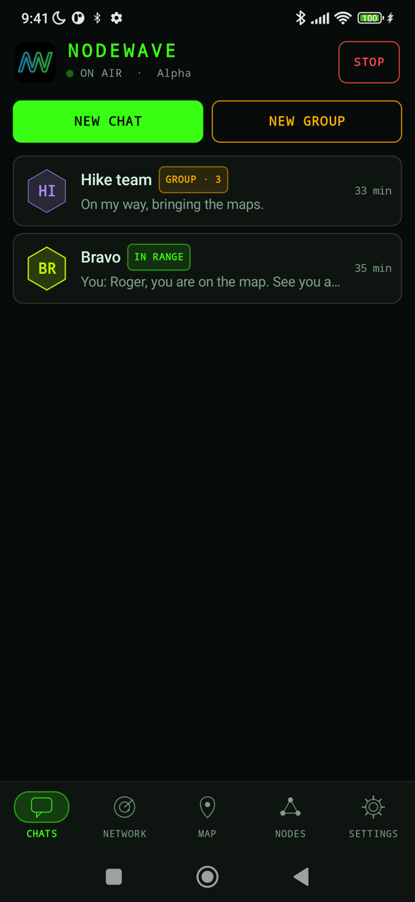
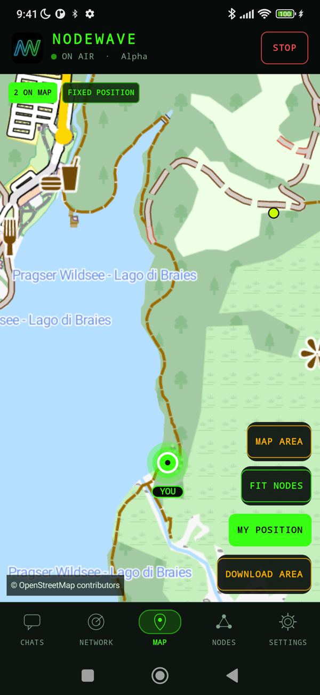
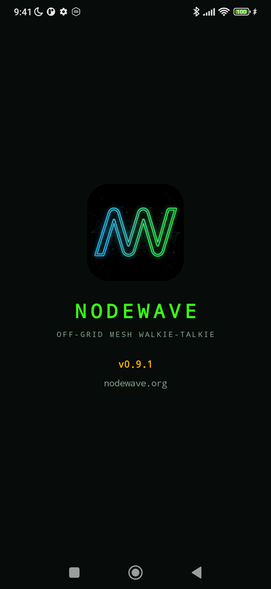
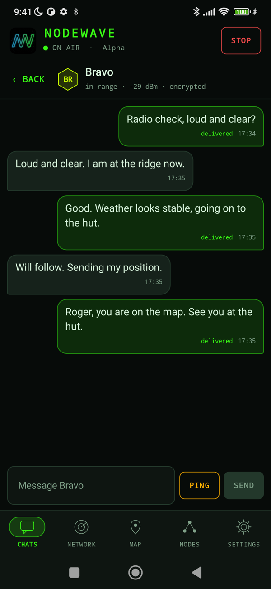
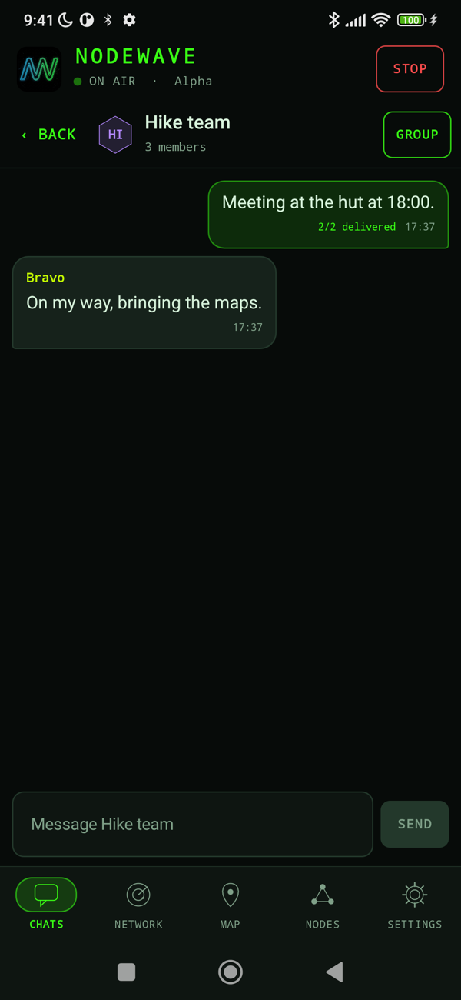
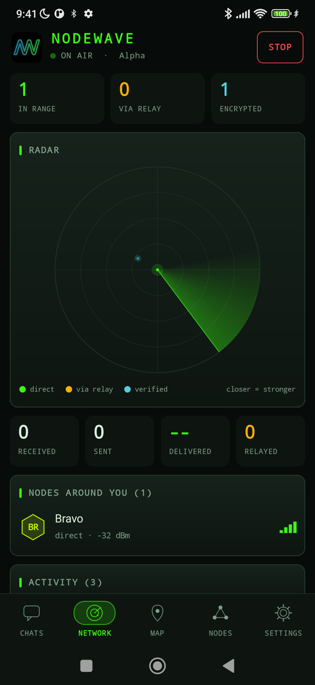
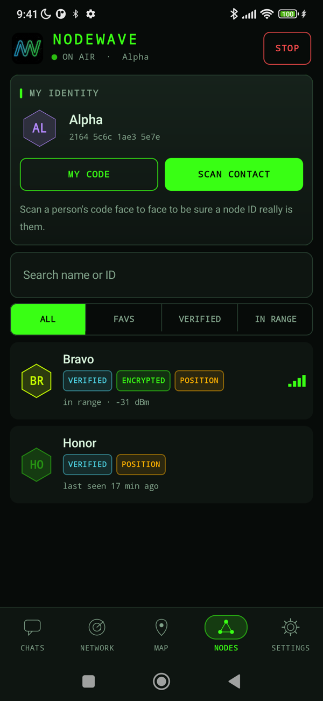
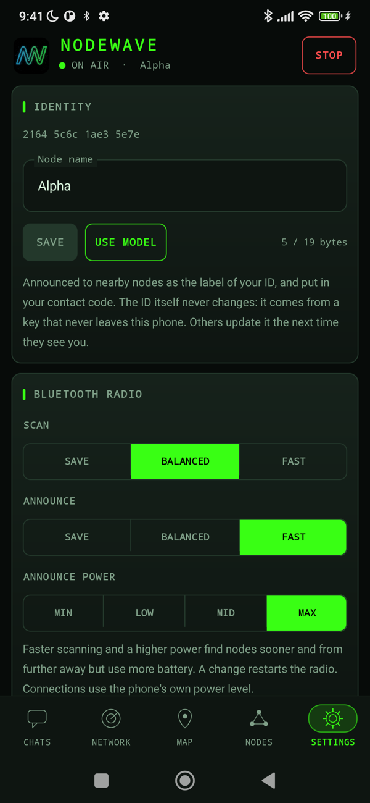

Off-grid · open source
Talk to anyone nearby. No network needed.
NodeWave turns Android phones into an Off-Grid Mesh Communication System. Messages, voice clips, photos and positions hop from phone to phone over Bluetooth, and jump to Wi-Fi Direct when something big has to move. End-to-end encrypted. No internet, no servers, no Google services.
Pre-release software for Android 10 or later. Free, GPL-3.0.


In use
Real phones, real radios
Screenshots taken on phones talking to each other over Bluetooth, no network involved. The two nodes on the map are placed on a hiking trail for the picture. Drag, scroll, use the arrows, or tap a phone to enlarge it.






What it does
Built for when the network is gone
Every phone is a node. There is nothing to sign up for and nothing in the middle that can read your messages or go down.
Mesh relay
Messages hop across intermediate phones to reach people out of direct range, with delivery receipts that travel back the same way.
Encrypted end to end
Forward-secret session keys between each pair of nodes. Relays carry what they cannot read.
Verified contacts
Scan a QR code in person to confirm who a node ID belongs to; the key is then pinned.
Voice messages
Hold the microphone and talk (up to 15 s). Opus over Bluetooth, Codec2 for slow links, resent if a chunk is lost.
Photos, fast
A Wi-Fi Direct link that Bluetooth sets up by itself: about 120 KB in a third of a second, no confirmation to tap. Stripped of location data.
Group chat
Up to 8 people, sealed separately for every member, managed by an admin.
Offline maps
A vector Mapsforge file for a whole country, downloaded once. See where everyone is, with no connection.
Keeps listening
The radio runs as a foreground service, with the screen off or the app closed.
Open and honest
GPL-3.0, no proprietary dependencies, F-Droid friendly. The security notes list the limits as well as the strengths.
Timeline
From a first ping to a mesh with voice and photos
NodeWave started on 1 November 2026 with two phones and one word: "CIAO - 73". Here is how it grew, and where it is heading. The future part is a plan, not a promise: it changes with what the tests and the hardware tell us.
- 1 Novv0.1
"CIAO - 73"
The first radio ping between two phones over pure Bluetooth Low Energy. The transport contract that keeps the radio apart from the rest is born.
- 1 Novv0.2 - v0.3
Identity and relay
Stable node IDs, an application protocol, and multi-hop relay: messages cross intermediate phones to reach someone out of range.
- 1 Novv0.4
Always on, always private
A foreground service keeps the radio alive with the screen off, history is stored encrypted, and messages are end-to-end encrypted.
- 1 Novv0.5
Forward secrecy
Signed ephemeral key exchange, key rotation, authenticated neighbour announcements, and a much more reliable link: median delivery down from 2.7 s to 1.3 s.
- 1 Novv0.6
Contacts, groups, watchdog
QR-verified contacts, group chat for up to eight people, and a watchdog that recovers a deaf Bluetooth scanner.
- 4 Novv0.7 - v0.8
A real interface, positions, maps
The tactical interface, node names, shared positions on offline vector maps, and a link benchmark to measure what Bluetooth can really do.
- 4 Novv0.9
An identity of its own
The app icon and splash screen, a clearer tab bar, a readable status bar, and this website.
- 4 Novv0.10 - v0.11
Voice
Link classes (slow, medium, fast), sealed chunked transfers with resend, relays that refuse what their next link cannot carry, and voice messages with Opus and Codec2.
- 4 - 5 Nov · todayv0.12
Photos and Wi-Fi Direct
A fast link set up over Bluetooth, photos from camera, library or files, retry of failed transfers. You are here: the project is feature-rich and now needs testing on many more phones.
- What comes next
- Next0.13
Test campaign
Structured tests on as many phone models and Android versions as possible, reported through the test report form. Honor and other weak Bluetooth clients get special attention.
- Next0.14
Voice in groups
The same chunked, sealed transfers for group voice clips, with shorter limits so that seven copies stay affordable.
- SoonLoRa
Long range
USB LoRa boards (EBYTE E22-900T22U and an ESP32 LoRa board) as a third radio: kilometres instead of metres, with Codec2 voice and text, and no photos on such a thin link. Range measured outdoors.
- Later1.0
Ready for everyone
Signed release builds, F-Droid listing, an independent security review, and the polish that a first stable version deserves.
- Exploringideas
Beyond
Live push-to-talk over a fast link, shared waypoints and routes on the map, Bluetooth LoRa boards, wearables.
Dates beyond today are intentionally missing: this is a one-person, evenings-and-weekends project, and the order depends on testing and on when the hardware arrives.
Security, honestly
Standard cryptography, stated limits
Only the standard Java and Android cryptography is used: P-256 signed ephemeral key exchange, HKDF-SHA256 and AES-256-GCM. Session keys live in memory only and are replaced every hour. The design has not been independently audited, and the limitations (visible metadata, trust on first contact, what a Wi-Fi Direct link reveals) are written down in the security notes.
Get it
Install or build
Debug-signed APKs are attached to each release and update over each other. To build it yourself you need the Android SDK with NDK 27.2 and CMake 3.22.1 (for the Codec2 library):
git clone https://github.com/sputlab/nodewave cd nodewave ./gradlew assembleDebug
On Android 10 and 11, location services must be on or the system returns no Bluetooth scan results. NodeWave has no proprietary dependencies and is built to be F-Droid ready.
Help it grow
NodeWave is free software and always will be. Testing it on your phone is the most useful thing you can do; donations pay for test phones, radio boards and hosting.